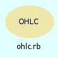

|  |
In dieser Klasse wird ein OHLC-Objekt behandelt
Ein OHLC-Objekt enthält die Informationen über den Kursverlauf im Zeitabschnitt einer Kerze
Die Basiswerte open, close, high, low, average, volume , sowie openDate und date werden bei der ObjektInitialisierung gesetzt und können nicht verändert werden.
Die Basiswerte sind als Methoden verfügbar ( OHLC.basiswert ).
| [RW] | date | |
| [RW] | openDate |
Ein Aufruf ohne Parameter initialisiert ein leeres OHLC-Objekt, date und openDate werden auf das aktuelle Systemdatum gesetzt
Der optionale Block muss openDate, date und base in dieser Reihenfolge initialisieren.
| Aufrufbeispiel: | @chart.unshift(OHLC.new(ohlc){|data| openDate, date, base = *data }) |
Es kann auch ein Array übergeben werden. Die ArrayElemente werden wie folgt zugewiesen
Array : [open , high, low, close, volume, price ]
Fehlende Elemente werden mit open ergänzt ( volume ist dann 1 )
Als weitere Alternative kann auch ein einzelner Zahlenwert übergeben werden. Dann wird Volumen auf 1 gesetzt und alle ohlc-Felder werden auf den Zahlenwert gesetzt.
[ show source ]
# File ohlc.rb, line 42 def initialize(data=nil) if block_given? @openDate,@date,@base = yield(data) else @date, @openDate=Time.new, Time.new data=[data] if data.is_a? Numeric if data.is_a? Array o_data= data.dup # prevent the data to be eaten @base= { :open => o_data.shift, :high => o_data.shift || data.first, :low => o_data.shift || data.first, :close => o_data.shift || data.first, :volume =>o_data.shift || 1, :price => o_data.shift || data.first } else @base=Hash.new end end end
OHLC kann wie ein Hash angesprochen werden
[ show source ]
# File ohlc.rb, line 78 def [](key) if key=='date' || key == :date @date else getValue(key) end end
openDate und date werden auf Stock#hourStart bzw Stock.hourEnd gesetzt, wenn die ursprünglichen Werte ausserhalb des Intervalls liegen.
In Verbindung mit OHLC#checkData können die OHLC-Objekte zuverlässig initialisiert werden.
[ show source ]
# File ohlcRecord.rb, line 38 def adjustDate(s) if @openDate.timeFraction < s.hourStart @openDate = @openDate.adjust2timeFraction(s.hourStart) end if @date.timeFraction > s.hourEnd @date = @date.adjust2timeFraction(s.hourEnd) end end
Einfache Prüfung der OHLC-BasisWerte.
- open, high, close, low und price müssen innerhalb Stock#tickRange liegen
- volume muss größer als Null sein
- openDate muss kleiner als Stock.hourEnd, date muss größer als Stock#hourStart sein.
Die Methode liefert true, wenn die Daten ok sind.
Parameter
| s : | Ein Stock-Objekt |
[ show source ]
# File ohlcRecord.rb, line 19 def checkData(s) result=true @base.each do |x,y| unless x == :volume return nil unless ( s.tickRange[ "min" ] .. s.tickRange[ "max" ]).include?(y) else return nil if y <= 0 end # unless end #each # return nil if @date.timeFraction < s.hourStart || @openDate.timeFraction > s.hourEnd true end
[ show source ]
# File ohlcRecord.rb, line 48 def is_dailyClose s @date.timeFraction >= s.hourEnd end
Ein SQL-Kommando wird erzeugt, das die Basiswerte des aktuellen OHLC-Objekts in einer Datenbank ablegt.
Aufrufbeispiel
SQLquery.new("ohlc", ohlc.mysqlInsertString("ib_#{@stock.getDatabaseName} "))
[ show source ]
# File mysql_class.rb, line 8 def mysqlInsertString(database) "insert into #{database} (date, #{@base.keys.join(',')}) values ('#{@date.strftime( "%Y-%m-%d %H:%M:%S")}',#{@base.values.join(',')}) " end
[ show source ]
# File ohlcRecord.rb, line 5 def ohlcKeys @base.keys end
Aufbereitung der Basisdaten für den cvs-Output.
Parameter wie bei OHLC#to_s.
Das Volumen wird an den generierten String angehängt und es wird ein SatzEndeZeichen eingefügt.
Aufruf
OHLC#printCSV('open','high','low','close','price'){|opendate,closedate| closedate.strftime(" %H:%M #{$,}")}
[ show source ]
# File ohlc.rb, line 151 def printCSV(*values, &b) if values.empty? a= self.to_s(&b) else a= self.to_s(*values, &b) end a +self[ :volume ].to_s+$/ end
OHLC-Objekte können einfach per "print" ausgegeben werden
"to_s" spezifiziert diese Ausgabe
Ohne weitere Parameter wird eine Ausgabe im Format
22.03.200 5 10:38 -- 10000 10000 10000 10000 Datum(open) open high low close
erzeugt.
Die auszugebenden OHLC-Werte können durch die Angabe der Werte als Parameter definiert werden
a=OHLC.new(10000)
a.to_s('open','close','gogo')
=> "22.03.2005 10:45 10000 10000 10000 "
Die globale Variable ’$,’’ (WortSeperator) trennt die Werte.
Die Datumsangabe wird im (optionalen) Block ausgewählt und formatiert. Dem Block werden das OpenCandle- und das CloseCandle-Datum als Time-Objekte zur Vefügung gestellt.
a.to_s('open','close','gogo'){|opendate,closedate| closedate.strftime(" %H:%M -- ")}
=> " 10:43 -- 10000 10000 10000 "
Die OHLC-Werte werden einheitlich formatiert, der Open-Wert dient hierfür als Referenz. Indikatoren sollten deshalb separat ausgegeben werden.
[ show source ]
# File ohlc.rb, line 112 def to_s(formatString=nil) unless @date.nil? || @openDate.nil? if block_given? b=yield(@openDate, @date) else b=@openDate.strftime("%d.%m.%Y %H:%M#{$,} ") end if formatString.nil? case @base[ :open ] when 0 .. 1 formatString= " %6.4f " when 1.. 100 formatString= " %6.3f " when 100 .. 1000 formatString= " %6.2f " when 1000 .. 100000 formatString=" %8.0f " else formatString=" %1.0f " end end formatString+=$, unless $,.nil? b << sprintf(formatString *5,@base[ :open ],@base[ :high ],@base[ :low ], @base[ :close ], @base[:price] ) + @base[:volume].to_s else "" end end